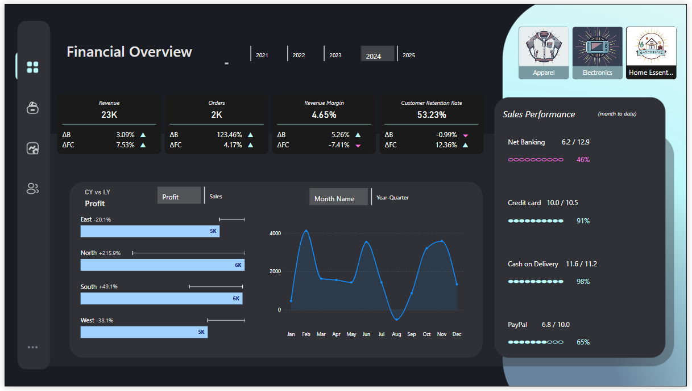
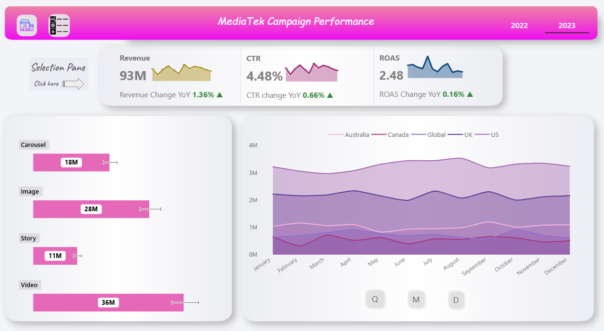
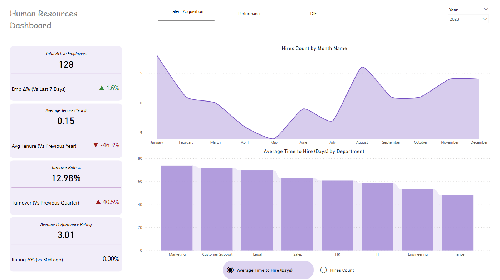
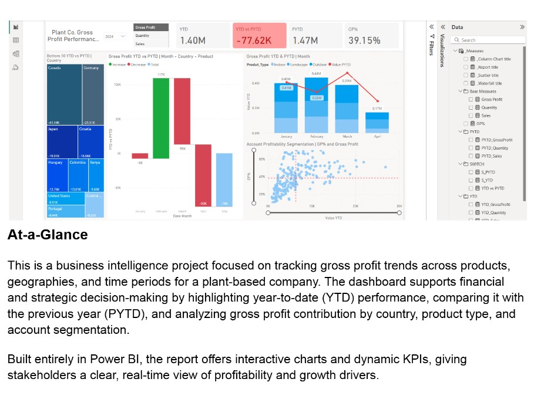

Built a centralized Power BI dashboard for a retail client, replacing Excel-based reports. Integrated sales, customer, and order data to track profitability, retention, and forecast vs. budget. Delivered tailored views for execs, category heads, and regional managers, enabling data-driven decisions.

This project is focused on marketing campaign performance, designed to
support data-driven decision-making for a global retail company. The goal was to build a
comprehensive performance tracking system that gives marketing teams visibility into spend,
reach, engagement, and revenue — and helps optimize future campaigns across platforms and
audiences.


An interactive Power BI dashboard designed to provide actionable insights into key HR metrics including hiring trends, employee performance, turnover, and diversity. The report features dynamic KPIs with trend indicators, time-based comparisons (7d, 30d, QoQ, YoY), and intuitive visuals tailored for HR decision-making
Tracking 33+ customer metrics from tenure to basket size, this dashboard pinpoints exactly where to refine marketing efforts, adjust store formats, and maximize customer lifetime value.

This project analyzes the relationship between movie budgets and box office gross earnings using a dataset of 7,668 films (1980–2020).

This is a business intelligence project focused on tracking gross profit trends across products,
geographies, and time periods for a plant-based company.